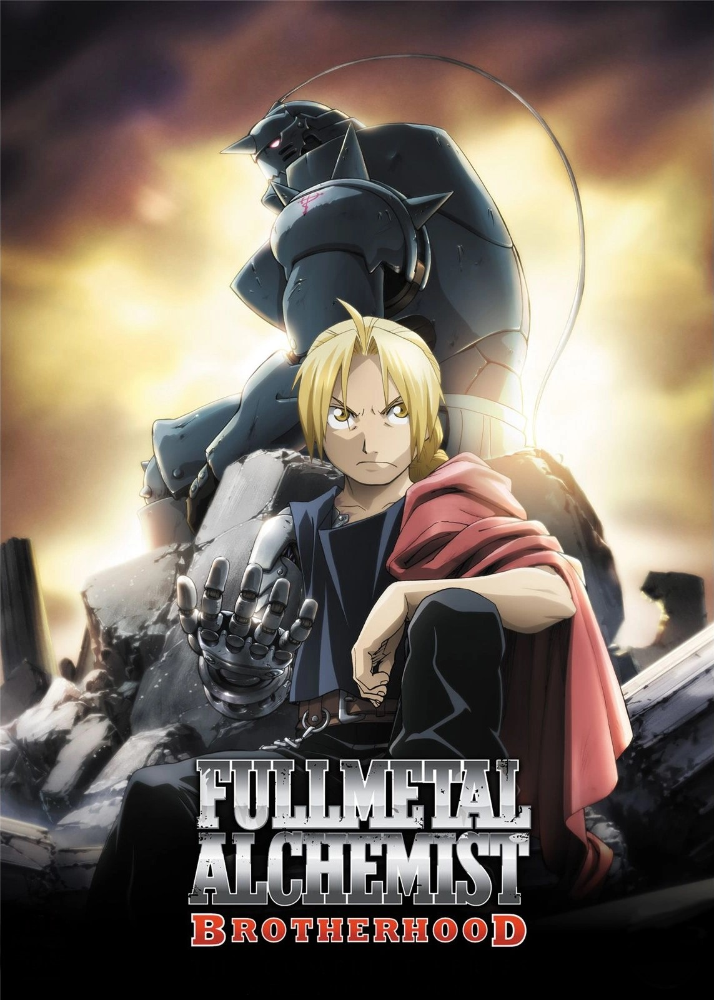
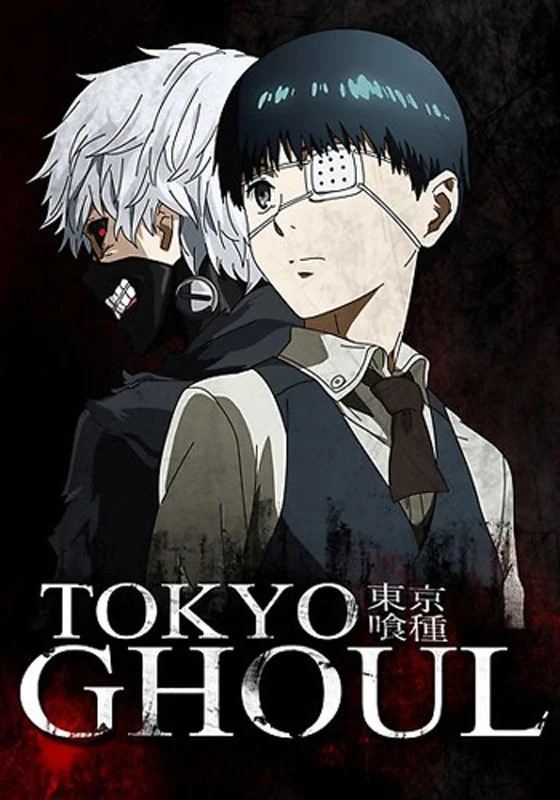
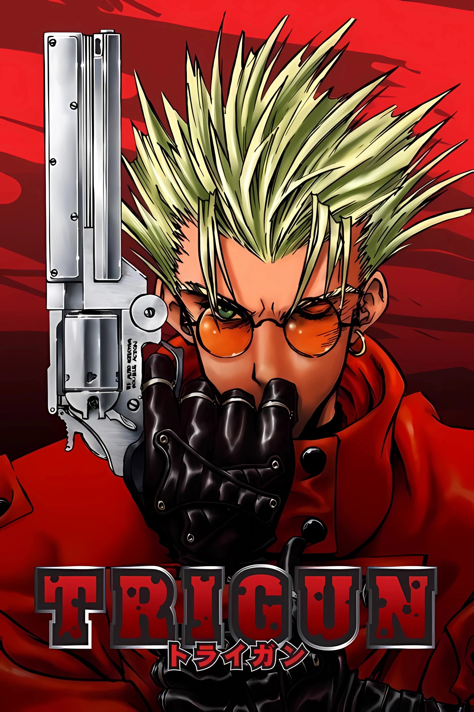
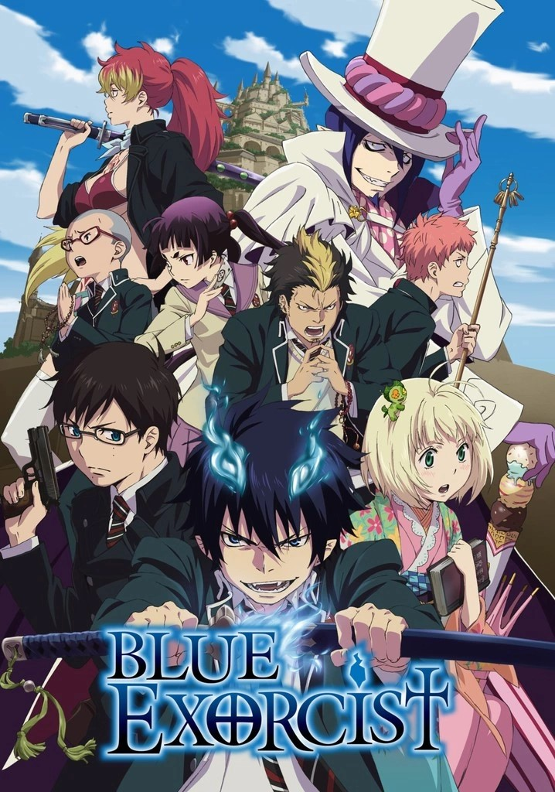
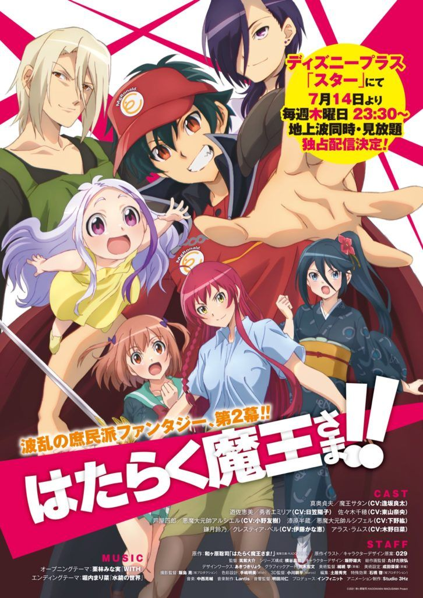
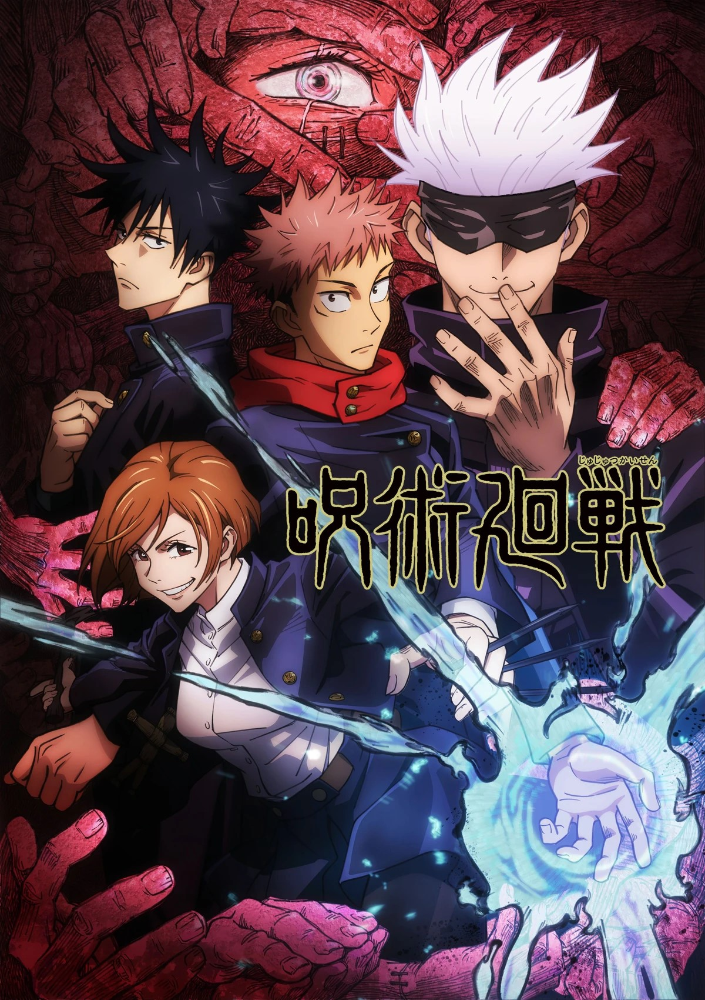
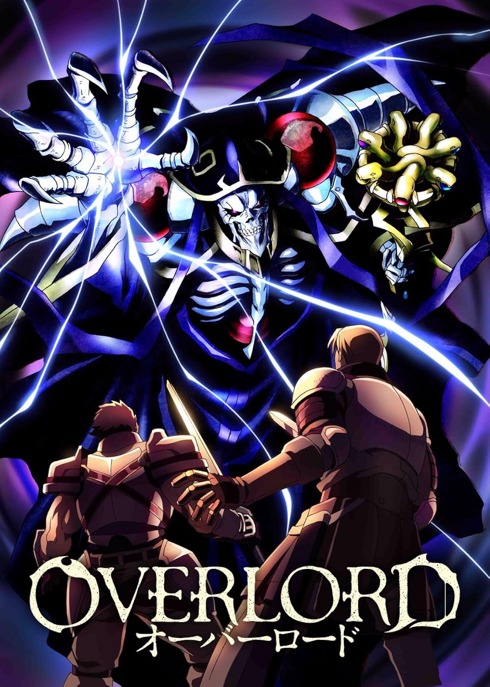

DRAGON BALL Z

Villanos terroríficamente malvados de los rincones más oscuros del espacio y el tiempo se enfrentan con la Tierra,
y Goku, el guerrero más fuerte del planeta, es todo lo que se interpone entre la humanidad y la extinción. Acompañado
en la batalla por los valientes Guerreros Z, Goku viaja a reinos lejanos y peligrosos en busca de los poderes mágicos
de las siete Dragon Balls... ¡y de una buena pelea!
FULL METAL ALCHEMISTS
Los hermanos Elric rompieron uno de los más importantes tabúes de la alquimia, de modo que Ed perdió casi la
mitad de su cuerpo, ahora reemplazado por partes mecánicas, y su hermano menor Al, quedó convertido en un alma
ligada a una armadura. Ambos buscarán la forma de recuperar sus cuerpos, resolver uno de los grandes misterios
de la alquimia y recuperar a su madre.

TOHYO GHOULS

En Tokyo ocurren asesinatos misteriosos cometidos por Ghouls, seres desconocidos que comen carne humana, un día
Kaneki Ken un joven de 18 años que cursa la Universidad conoce a una chica en un restaurante y la invita a salir,
pero luego se da cuenta que ella es un Ghoul y sufre un ataque de parte de ella, termina convirtiéndose en un ser
híbrido humano-ghoul y de ahora en adelante deberá vivir escondiéndose de los humanos.
TRIGUN
En una tierra similar al Lejano Oeste se cuentan historias de un cruel y peligroso criminal cuya recompensa
asciende a 60 mil millones. Meryl y Milly deciden encontrarlo y vigilarlo para así evitar sus fechorías.

AO NO EXORCIST

En el mundo existen Assiah, el territorio de los humanos, y Gehenna, el territorio de los demonios.
Aunque normalmente estas dos dimensiones no suelen cruzarse, el que los humanos hayan conseguido poseer
sustancias materiales hace que estos se adentren en el mundo material. Pero entre los humanos hay quienes
pueden exorcizar a dichos demonios: los exorcistas.
HATARAKU MAOU SAMA
Frustrado por la heroína justo cuando está a un paso de conquistar el mundo, el Rey Demonio se encuentra en
el Tokio moderno. Sin habilidades que valga la pena mencionar para enfrentar el mundo real, el Rey Demonio se ve
obligado a llegar a fin de mes haciendo hamburguesas en un restaurante de comida rápida. Para detener cualquier plan
futuro de dominación mundial, la heroína persigue el rastro del demonio y termina trabajando como una humilde vendedora
por teléfono.

JUJUTSU KAISEN

Yuji Itadori se traga un dedo maldito para salvar a alguien de su clase y ahora Ryomen Sukuna,
un poderoso hechicero malvado conocido como el Rey de las Maldiciones, vive en su alma. Las maldiciones
son seres sobrenaturales creadas a partir de las emociones negativas de los humanos. Esta energía maldita
puede usarse como fuente de poder por parte de los hechiceros y de los espíritus malditos.
OVERLORD
Cuando un popular MMORPG anuncia su cierre definitivo, el veterano jugador Momonoga decide quedarse en él
hasta el mismo cierre, sin salir. El problema es que pasa la horra de cierre y él no se desconecta, pero
los NPC han ganado conciencia propia. ¿Está atrapado?
